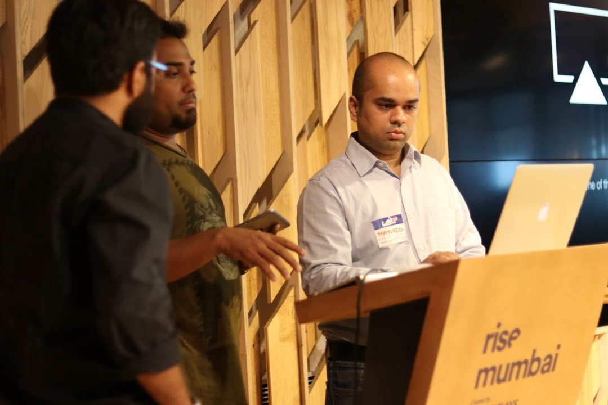

Mayuresh Shilotri
Man trying to save a few lives

Right most person in the photo - Presenting at one of the DataGiri events
- 2016 - GreyAtom - Co-Founder & Head - Marketing - At GreyAtom, we are transforming the way people learn technology. We are EdTech Product Company. We are hiring!
- 2016 - DataGiri - Co-Founder - DataGiri is a Community for Data Science Professionals and Enthusiasts. We meet once a month to share the latest and best on the Data Science, Machine Learning, Artificial Intelligence and more (www.datagiri.org).
- 2015 - Interactive Intelligence - Development Group Director - ININ acquired Customer360. Interactive Intelligence provides software and cloud services for customer engagement, unified communications and collaboration to help businesses worldwide improve service, reduce costs, and grow their business faster.
- 2013 - Customer360 - Co-founder Hyper-Personal in-App Video Chat for Next-Gen Customer Support
- 2009 - Cognizant Technology Solutions - Handled &delivered Sales Force Effectiveness, Marketing Analytics & Consulting projects for multiple Clients across domains (Pharmaceutical, Healthcare, Retail & more) and across geographies (US, Europe & Asia)
- 2007 - Indian Institute of Technology, Madras - MBA - Activities and Societies: * International Level Winner in ‘Quadriga’ & National Finalist at ‘Occam's Razor’ Management Events as part of Avenues 2008 at SJMSOM, IIT Bombay * Participation in numerous Management Conventions, Festivals and Competitions, * Coordinator - Placement Team, Conceptualization to implementation of Online/ Offline Interface/Merchandise for Placement Campaign * Event Coordinator at Samanvay 2008 and 2009 (DoMS B-School Festival) * Football
- 2014 - The Interaction Design Foundation - The Interaction Design Foundation is a non-profit educational organization which produces open content and Open Access educational materials online with the stated goal of "democratizing education by making world-class educational materials free for anyone, anywhere."
- 2005 - Shah & Anchor Kutchhi Engineering College - Bachelor of EngineeringField Of StudyElectronics
- 2001 - V. G. Vaze College of Arts, Science and Commerce
- 1987 - Joins Sau A.K.Joshi English Medium School in Thane
- 1983 - Born in Indore, Madhya Pradesh, India